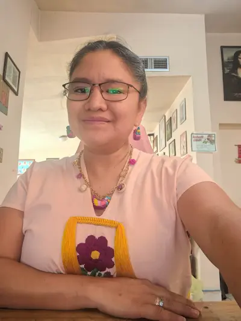

Dayniz Yael Velasco Coronel
About Me
My name is Dayniz Velasco. I was born and grew up in Oaxaca, Mexico but I live in Nuevo Casas Grandes, Chihuahua. I'm a student at BYU-Idaho studying Bachelor's Degree in Software Development. I'm working like Fronted Developer and I enjoy learning new technologies and applying them to solve real-world problems. I have two daughters, there are my movitation to keep learning and improving my skills. In my free time, I enjoy reading, listen to music, and spending time with my family. I'm excited to be part of this course and looking forward to learning more about dynamic web development.
Nuevo Casas Grandes, Chihuahua

Nuevo Casas Grandes is a city located in the northern part of the state of Chihuahua, Mexico.The city is surrounded by mountains and desert, offering stunning views and outdoor recreational opportunities. Nuevo Casas Grandes has a vibrant community with a mix of traditional Mexican culture and modern amenities. Here become pioners of the Church of Jesus Christ of Latter-day Saints in Mexico, and there is a temple that serves as a spiritual center for members of the church in the region. The city has a warm and welcoming atmosphere, with friendly locals and a strong sense of community. Overall, Nuevo Casas Grandes is a unique and charming city that offers a blend of natural beauty, cultural richness, and historical significance.
